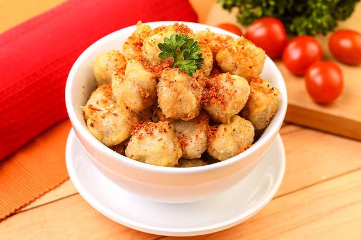

Leupeut
Leupeut: Camilan Tradisional yang Sarat Makna dan Rasa
Leupeut merupakan makanan tradisional dari Jawa Barat...
Leupeut terbuat dari ketan yang dibungkus janur, biasanya disantap bersama tempe goreng atau tahu isi.
Rp5.000

Cimol
Cimol adalah singkatan dari "aci digemol"...
Cimol digoreng hingga garing di luar tapi tetap kenyal di dalam, biasa disajikan dengan bubuk cabai atau keju.
Rp7.000

Mie Kocok Bandung
Mie Kocok adalah makanan khas Bandung...
Hidangan ini terdiri dari mie gepeng, kikil sapi, tauge, dan kuah kaldu yang gurih, cocok disantap saat cuaca dingin.
Rp25.000